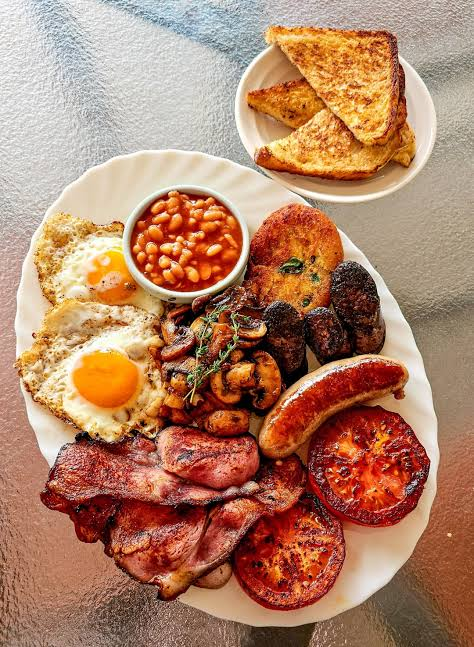

Africa is a land of diverse flavors and traditions. From spicy stews of Ethiopia to savory South African curries, these dishes represent the richness of African cuisine.
Jollof Rice
West African spicy rice cooked in tomato sauce and spices.
See Recipe

Injera with Doro Wat
Ethiopian sour flatbread with spicy chicken stew.
See Recipe
Bunny Chow
South African bread loaf filled with spicy curry.
See Recipe

Bobotie
A baked dish of spiced minced meat with egg topping.
See Recipe
Chapati & Sukuma Wiki
East African flatbread served with sautéed greens.
See Recipe
Mandazi
Soft, slightly sweet fried dough popular in East Africa.
See Recipe